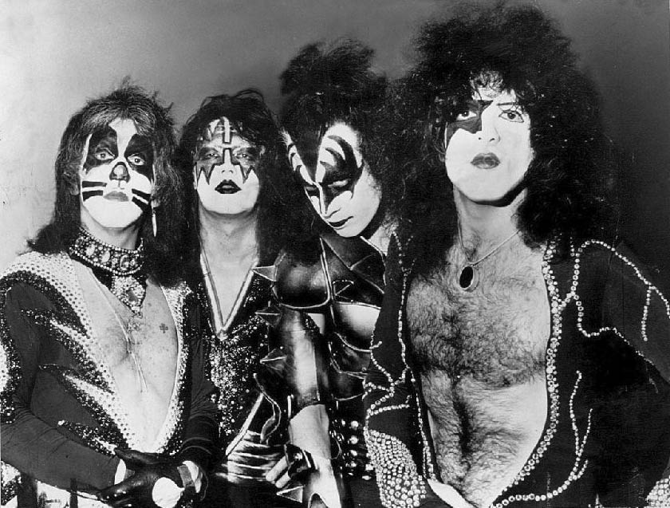

Curiosidades do Rock
Fatos e nomes que ajudam a entender a história do rock clássico.

Bandas e seus países
| Banda | País | Ano de formação |
|---|---|---|
| The Beatles | Inglaterra | 1960 |
| Led Zeppelin | Inglaterra | 1968 |
| Pink Floyd | Inglaterra | 1965 |
| Queen | Inglaterra | 1970 |
Artistas recomendados
- Legião Urbana
- Blitz
- Guns N' Roses
- AC/DC
Para começar a ouvir
- Back in Black
- Paradise City
- Você Não Soube Me Amar
- Tempo Perdido
Você sabia?
Saiba mais no site Toda Materia. Clique Aqui!